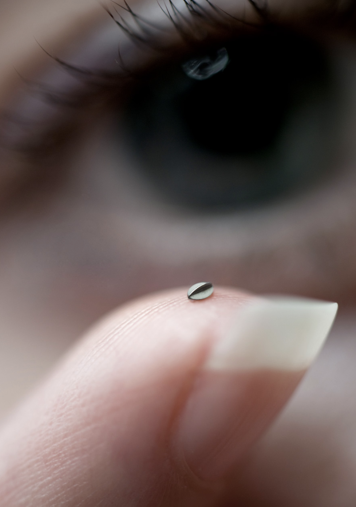
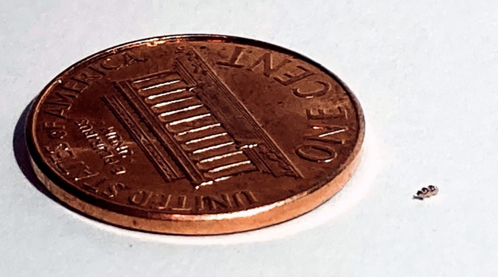

Microrobots treat cancers and neurodegenerative diseases
The idea of microrobots performing non-invasive surgery has been around for more than ten years. Several research groups specialized in the development of the technologies necessary to achieve that ambitious goal. It’s a complex task that involves a multidisciplinary approach, including microfabrication, electronics, control system, software, drug delivery, and chemistry.
One example of a microrobot application is retinal surgery
Bionaut, a company screened by Prime Movers Lab, is working on microrobots for brain tumor treatment
You can read more about the enablers that lead to this reading this article.